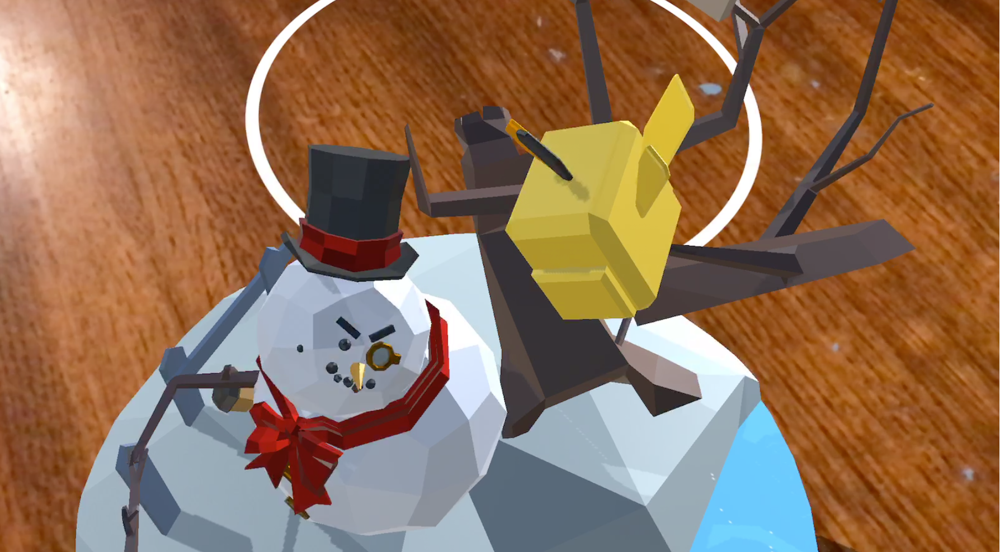

Kingdom Watcher is the ultimate blend of tower defense and
bow and arrow shooter. Inspired by Valve's The Lab - Longbow,
players must defend their castle from the onslaught of the Troll King's army.
Players can build and upgrade towers like a traditional TD game, but are also
equipped with their own bow and arrow to take out enemies. I designed and built Kingdom
Watcher from the ground up with minimal engineering support from Subdream
Studios. All the art assets were done by Kanji Fukuta of Subdream Studios.
Built with Unity - C#. Kingdom Watcher is available on GearVR and has been played over 7000 times.
SocialQ is an assistive technology that
helps children affected by ASD (Autism-Spectrum Disorder)
to better recognize facial expressions and social cues.
SocialQ utilizes Microsoft's Augmented Reality Headset HoloLens
to provide real-time and real-world assistance and training. There
are two interfaces: a learning interface, where the user can ask the
app what certain expressions look like, and an assistance interface, where the
user can figure out what the other person's expressions reveal about their emotions.
Built using Microsoft Emotion API, Windows Speech Recognition, and Unity SDK for HoloLens.
Won Best Use of Microsoft Technology at UC Berkeley's Hackathon: CalHacks 3.0.
Also a U.S Microsoft Imagine Cup National Finalist.
All demo footage is shot live through the HoloLens.
Phyloforest VR
Phyloforest is a visualization of phylogenetic trees in
virtual reality. Users can select different proteins and
see the evolution of species based on mutations in the selected
protein. Built in Unity - C# for Stanford's Treehacks 2017.
Won Most Innovative Genomics hack award from Illumina.
Snowbird

Snowbird is the first immersive film for ARKit enabled devices.
The viewer places a snowglobe in their world and watches an animated
short in augmented reality, exploring different angles and getting up
close and personal with the characters. Available soon.
Co-founder and CEO of Lunasphere
Lunasphere is a platform for the next generation
of informational content about real world objects.
Currently, the Triton Museum of Art in Santa Clara uses Lunasphere to
publish multimedia content, which its patrons can
access through QR Code or through an exhibit look up.
I built Lunasphere from the ground up using Angular and
JQuery for the front-end, and AngularFire, Firebase, and Javascript
for the backend.
memVRy is a way to visualize memory palaces in
Virtual Reality, which can aid in remembering
new ideas. In this demo, memVRy is used to teach
Spanish vocabulary words. I lead my team in building
this product in Unity for Google
Cardboard at a hackathon.
OrganizEZ
OrganizEZ: Never worry about your downloads again!
OrganizEZ is an app that runs on your desktop and watches
your downloads folder. Any new files downloaded are analyzed
using IBM Watson's image recognition, natural language, and document conversion
APIs. Your download is then sorted into the correct directory based on its contents.
Built at a hackathon using NodeJS and Electron.
Chemistry VR Demo
I created this short demo to demonstrate
the power of virtual reality to clearly
depict abstract concepts that are typically
difficult for students to visualize, such as chemistry.
explVRe
explVRe is a prototype for visualizing
data in virtual reality. In this demo,
we explore an industry map of the connected
cars industry. Built using Unity for Google Cardboard
using data from Crunchbase.